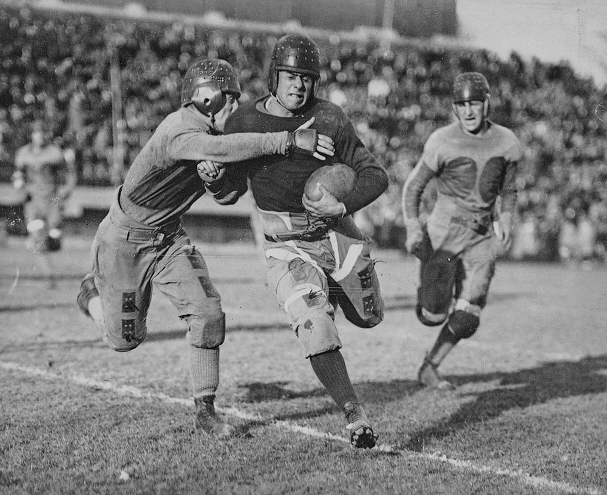
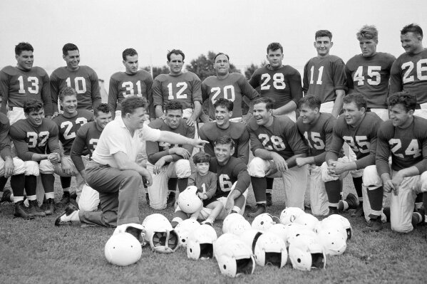
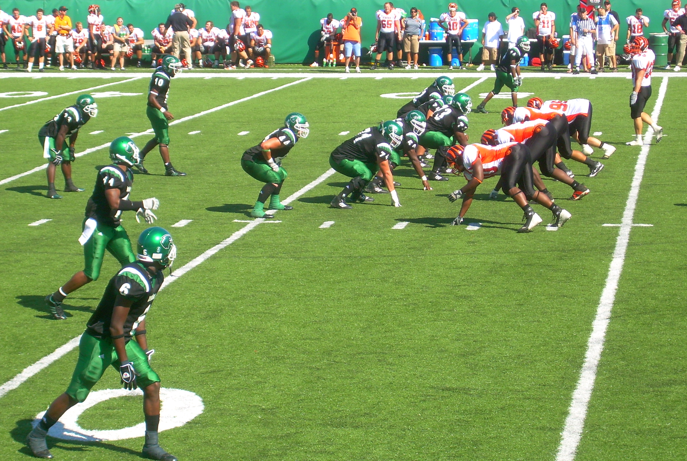
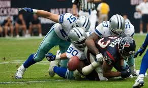

Istoria Fotbalului American
Origini (1800 - 1900)
- Sportul își are rădăcinile în fotbalul european și rugby-ul britanic, jucat în colegiile americane la mijlocul secolului al XIX-lea.
- În 1869, primul meci oficial de fotbal intercolegial din SUA a avut loc între Rutgers și Princeton, însă era mai aproape de fotbalul european decât de forma actuală a fotbalului american.
- În anii 1870, universitățile americane au început să adopte reguli inspirate din rugby.
- Walter Camp, considerat „părintele fotbalului american”, a introdus reguli esențiale, precum linia de scrimmage, sistemul de down-uri și echipele formate din 11 jucători.


Dezvoltarea timpurie (1900 - 1930)
- În 1905, președintele Theodore Roosevelt a intervenit pentru a face sportul mai sigur, după o serie de accidente grave.
- NCAA (National Collegiate Athletic Association) a fost fondată în 1906 pentru a reglementa sportul la nivel universitar.
- În 1920, a fost fondată American Professional Football Association (APFA), care a devenit în 1922 National Football League (NFL).
Creșterea popularității (1930 - 1960)
- NFL a început să se consolideze ca ligă profesionistă dominantă.
- În anii 1950, televiziunea a avut un rol crucial în popularizarea sportului, cu transmisiuni regulate ale meciurilor.
- În 1958, finala NFL dintre Baltimore Colts și New York Giants, numită „The Greatest Game Ever Played”, a captivat milioane de telespectatori și a marcat începutul erei moderne a fotbalului american.


Era modernă (1960 - prezent)
- În 1960, a fost fondată American Football League (AFL), care a devenit un rival serios pentru NFL.
- În 1970, AFL și NFL s-au unit, ducând la crearea Super Bowl, cel mai important eveniment sportiv anual din SUA.
- Echipe legendare precum Pittsburgh Steelers, San Francisco 49ers și New England Patriots au dominat diferite epoci ale sportului.
- În prezent, NFL este cea mai populară și profitabilă ligă sportivă din SUA, cu milioane de fani în întreaga lume.